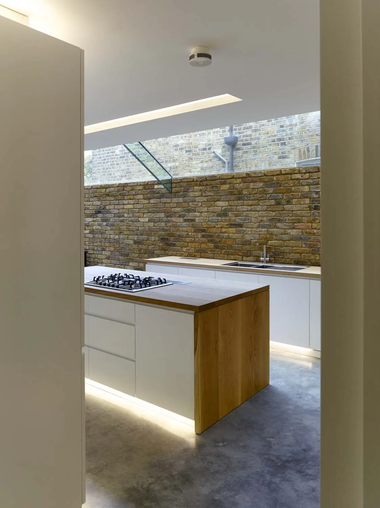
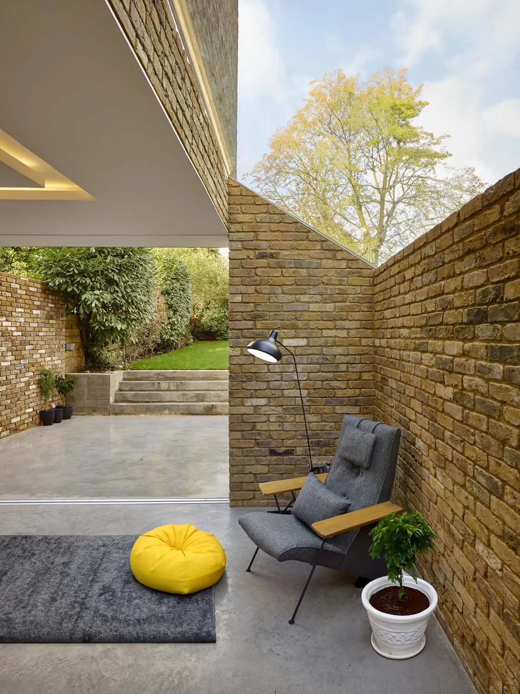
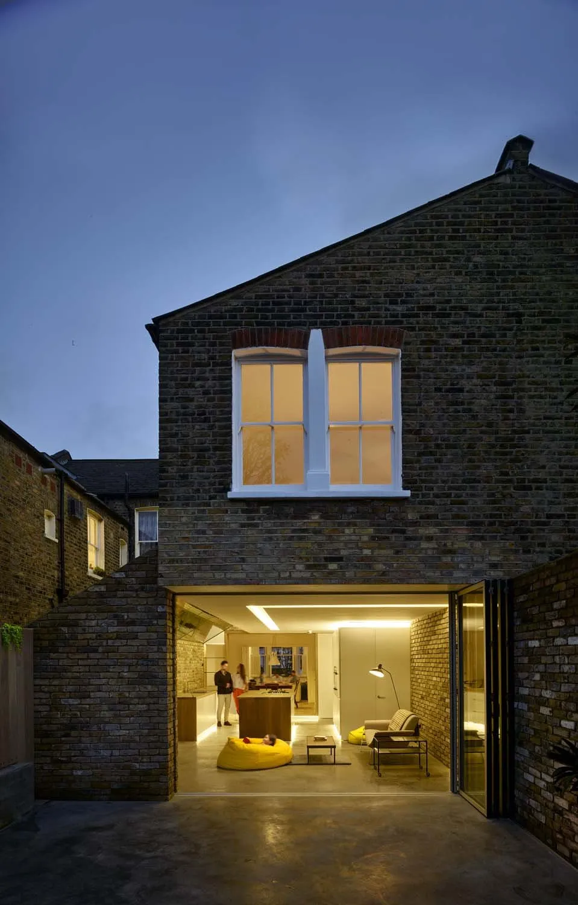

Modern Side Extension
A side extension to a Queens Park terrace that reads as a single brick pier wrapped in slim glazing — a small move that holds a lot of light.
An old problem, solved with a pier.
The site is a typical London terrace in Queens Park, with a narrow side alley that nobody used. The clients wanted to bring the social spaces of the house together, get more light into the deep plan, and finally do something with the alley — without losing what was there or upsetting the conservation officers next door.
Instead of the usual full-width side return, the extension reads as a single brick pier with slim aluminium bi-fold doors and frameless rooflight glazing wrapping around it. The pier holds the structure; the glazing dissolves the rest, so the outside reads as another room of the house.
The angled form keeps daylight reaching the neighbours and sits inside the conservation guidelines without argument. Inside, polished concrete, European oak, brick and white sprayed MDF carry the materials.
Winner of the RIBA London Award 2016 and the AJ Retrofit Award (Best House under £250k) 2015; shortlisted for the Stephen Lawrence Prize 2016.



"The design has quite literally changed my life."
Judith Breuer, clientWhat it's made of.